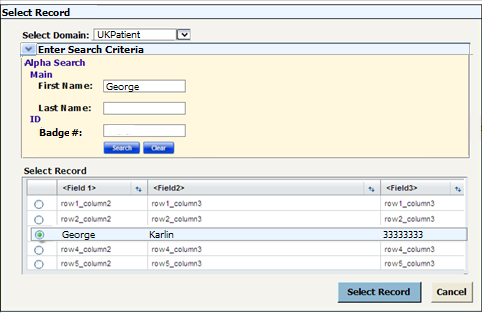
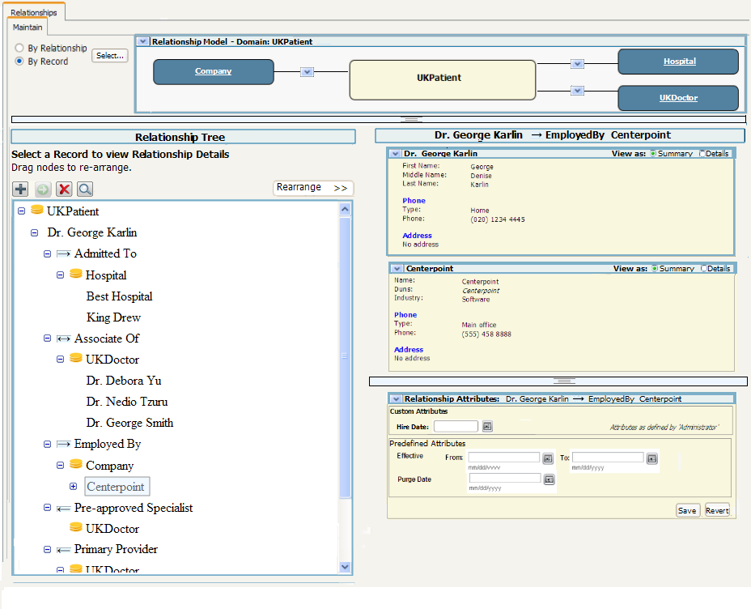

Manage->Relationship->Maintain->By
Record
Use Cases
- View and maintain relationships for a single
record and all relationships to all associated records.
- View details of selected relationship (source record,
destination record and relationship attributes)
Implementation Details
Screens
Select Record Overlay
When the user selects the "by Record" option the following screen is
shown.

Storyboard
Initial view of dialog
- Do not show the search critieria. This would be
shown once a domain was selected.
- Do not show the table for the search results this would
first be shown after the search button in the search area is selected.
Updates
Needed
- Should change "Search" to "Select" and call this "Select
Record". That way the button on the main area and the button on
this dialog match.
- Nice to have: Add the option to
select a subset of domains to show relationships for. This should be
populated with the set of domains that have relationships to
the domain selected above. The user should be able to any
number
of domains. By default all domains are selected for
showing.
Maintain by Record Main screen
Screen
after the Domain "UKPatient" and the record "George Karlin" is
selected.

Overlay shown by selecting the 'show relationship type' button

Screen
after the
record "Centerpoint" was selected

Screen
after the
record Centerpoint, Owns Offices was expanded and the record "Bangalore" was selected.

Notes on Relationship Model overview
- The windows should be minized by default
Notes on Tree Usage
- Selecting a relationship type allows deletion of all the records in the relationship.
- Selecting a domain disables Delete and Add.
- Allow
for multi-selected. If more than one record is selected then the
right hand side should be blank and the number shown by Delete should
be updated.
- Move could be implemented by finding a record
and moving all selected records under the record (similiar to how the
hierarchy tree works) or better yet by showing a second tree on the
right that just displays a Find Record button (and hide) and allowing for drag /
drop between the two trees (current on right, new on left)
- Do not allow any record that is already in its parent path to be expanded (stop cyclic references)
Example: Below "Dr. George Karlin" is not expandable because the record is already expanded.
If
Centerpoint->Bangalore had children relationships that refered back
to Centerpoint than that node would not be expandable.
- Build
in a configurable limits to the number of records to show under a node.
If too many records would be shown then the tree would show a
paginated table of the nodes and a More... button (for when the
table is dismissed). For the session if a record is selected from that
table
it appears in the tree list and under the parent node prior to the
More... button.
Nice to have would be the abliity to filter the table as follows:
- Names of destination records (optional)
- Relationship attributes (optional)
Here is an example of what a simple implementation of too many nodes to show might look like:

Organization on tree
The first two nodes on the tree are always
- Domain of selected record
After that the data sbould be organized as follows
- Relationships (alphabetical)
Here is a more complete example than shown above.
Notice that Dr. George Karlin is not expandable under Centerpoint <- Employed By.

Alternate to Tree Look and Feel
Go
back to the box look as shown on the Story Board and add a "Make
Current Record" option that would switch the current node to the
selected node.
The user could navigate back to the original record as it would be shown in one of the relationships in the boxes.
To see the Table Look and Feel click here.
Example Tree using domains: Customers, Accounts, Locations
 Customer
Customer- George Karlin
- -> Primary Holder
- Accounts
- Act #1
- Locations
- Locations
- Act #3
- Locations
Notes
- More than one Relation Type bubble can be shown at at time
Add Records to Relationship
Note: This is
a wireframe model of the screen

.
Find Dialog
A typical find dialog such as the following.

Move Dialog
If records are selected brings up a dialog that allows the
selection of a relationship associated with the domain of the selected
record. Selection of nodes for the move are limted to
records in the same domain. I.E. the Move option is grayed out if
records in different domains are selected
If a domain is
selected brings up a dialog that allows the selection of another record
in the same domain as the parent record of the relationship.
Example: Dr.
George Karlin > Associate Of > UK Doctor is selected. The
Move Dialog brings up a Move "Associate Of" dialog with the option to
select a new UK Patient record. All the records in this node are
now re-assigned to the new record. An example use case is
that the job perfomred by Dr. George Karlin that made him
an Associated of the UK Doctors is now performed by a different
patient.
Alternate Look of tree with "Destination>>" option
The following shows the look of the Manage Hierarchy tree with a Destination>> option. The look of the Relationship Tree would be very similiar.
The
difference is that when the "Show Move" option is on the user is only
allowed to multi-select nodes children nodes. Similiarly the user
can only move the records to another relationship associated with the
same domain. (For example, the user can not move UKPatient
records to the Company domain)
Also a user may move all the
records under a relationship by selecting a domain under a relationship
on one side of the tree and a record belonging to the domain of the
relationship. Example: Dr. George Karlin > Associate Of >
UK Doctor is selected on the left hand tree and dragged to Centerpoint
> Employed By > Fred Smith. After the drag all the
records under Dr. George Karlin > Associate Of > UK Doctor are
now shown as "Fred Smith > Associate Of > UK Doctor".
Note:
the details of the move for the Relationships may have to be worked on,
so Show Move is a nice to have feature for the Relationship.
This page lastchanged on
01-Oct-2008 13:40:00 PDT by andreakendall@dev.java.net